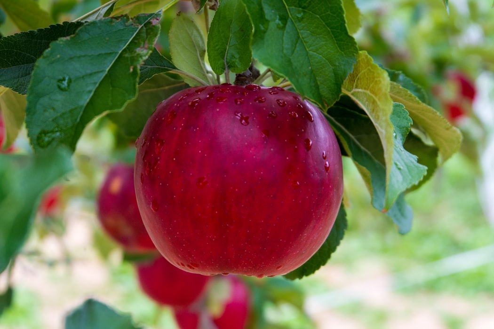

사과를 매일 하나씩 먹으면 의사를 멀리한다 (an apple a day keeps the doctor away)란 속담이 있을 정도로 유명한 가을 과일 중 하나다.[2] 비슷한 속담이 토마토에도 있다. 
현대 개량된 품종들은 영양분보다는 당도와 맛을 중시하는 방향으로 개량되었기에 과거 품종보다 맛은 좋을지 몰라도 영양분은 조금 빠지게 되었다. 물론 당연하지만 사과만 그런 것이 아니라 다른 종류의 과일들도 마찬가지이다.
상당수의 영양성분들이 껍질에 몰려있는데 사과는 껍질을 깎아먹는 경우가 많으니 '영양성분이 사과의 몇 배' 식으로 홍보하는 경우가 많은데 따라서 사과와 비교하는 식품기사는 껍질을 깎아먹는 한국 문화의 특성상 정보의 정확도가 다소 떨어지는 기사다.